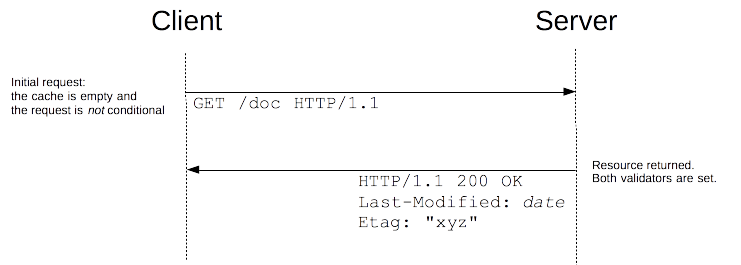

{{HTTPSidebar}}
HTTP has a concept of conditional requests, where the result, and even the success, of a request can be changed by comparing the affected resources with the value of a validator. Such requests can be useful to validate the content of a cache, and sparing a useless control, to verify the integrity of a document, like when resuming a download, or to prevent to lose updates when uploading or modifying a document on the server.
Principles
HTTP conditional requests are requests that are executed differently depending on the value of specific headers. These headers defines a precondition and the result of the request will be different if the precondition is matched or not.
The different behaviors are defined by the method of the request used and by the set of header used for a precondition:
- for {{glossary("safe")}} methods, like {{HTTPMethod("GET")}}, that usually try to fetch a document, the conditional request can be used to send back the document only if relevant, and therefore to spare bandwidth.
- for {{glossary("safe", "unsafe")}} methods, like {{HTTPMethod("PUT")}}, that usually upload a document, the conditional request can be used to upload the document only if the original it is based on is the same that is stored on the server.
Validators
With the notable exception of {{HTTPHeader("If-Range")}}, all conditional headers try to check if the resource stored on the server matches a specific version. To achieve this, the conditional requests needs to indicate the version of the resource. As transmitted the whole resource to compare it byte to byte is impracticable (and not even always what is wanted!), the request transmit a value describing the version: such values are called validators and are of two kinds:
- the date of last modification of the document, the last-modified date.
- an opaque string, uniquely identifying each version, called the entity tag or the etag.
Comparing versions of the same resource is a bit tricky: depending of the context, there are two kind of equality checks. Strong validation is used when byte to byte identity is expected, for example when resuming a download. Weak validation is used when the user-agent need only to determine if the two resources have the same content, even if they are minor difference (like different ads, or a footer with a different date).
The kind of validation is indepeneant of the validator used; both {{HTTPHeader("Last-Modified")}} and {{HTTPHeader("ETag")}} allow for both type of validation though the complexity to implement it on the server side may vary. HTTP uses strong validation by default, and it specifies when weak validation can be used.
Strong validation
Strong validation consists in guaranteeing that the resource is byte to byte identical to the one it is compared too. This is mandatory for some conditional headers, and the default for the others. Strong validation is very strict and may be difficult to guarantee at the server level, but guarantee no data loss at any time, sometimes at the expense of some performance.
It is quite difficult to have a unique identifier for strong validation with {{HTTPHeader("Last-Modified")}}. Often this is done using an {{HTTPHeader("ETag")}} with the MD5 hash of the resource (or a derivative).
Weak validation
Weak validation differs from strong validation as it considers two version of the document as identical if the content is equivalent. For example, a page that would differ from another only by a different date in its footer, or by different advertisement, would be considered as identical to the other with weak validation, but will be considered as different with strong validation. Building a system of etags that makes weak validation may be complex as it involves knowing the importance of the different elements of a page, but is very useful to optimize performance when caching information.
Conditional headers
Several HTTP headers, called conditional headers, lead to conditional requests. These are:
- {{HTTPHeader("If-Match")}}
- Succeeds if the {{HTTPHeader("ETag")}} of the distant resource is equal to one listed in this header. By default, unless the etag is prefixed with
'W/'performs a strong validation. - {{HTTPHeader("If-None-Match")}}
- Succeeds if the {{HTTPHeader("ETag")}} of the distant resource is different to each listed in this header. By default, unless the etag is prefixed with
'W/'performs a strong validation. - {{HTTPHeader("If-Modified-Since")}}
- {{HTTPHeader("If-Unmodified-Since")}}
- {{HTTPHeader("If-Range")}}
Use cases
Updating a cache
